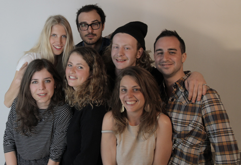

BARBÈS, PARIS EST UN COLLECTIF DE JEUNES GENS INDISCIPLINÉS ET TRÈS INSPIRÉS.
COMMISSAIRE D’EXPO, CHEF, CRÉAS, ARCHITECTES ET PROFESSIONNELS DE LA CULTURE, NOUS IMAGINONS DES ÉVÉNEMENTS PLURIDISCIPLINAIRES, IMMERSIFS ET PARTICIPATIFS QUI FAVORISENT LA JEUNE CRÉATION.
Chacun propose ses idées, apporte sa contribution pour inventer des projets ludiques et réjouissants : expositions à la rencontre entre l’art contemporain et la gastronomie, séances de cinéma à manger où les plats ont le goût des images, pop up dinners dans une galerie d’art, tout est possible !